Galeria
 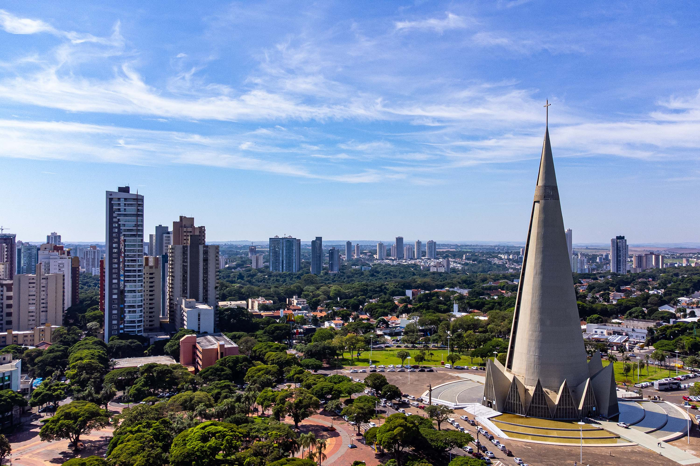
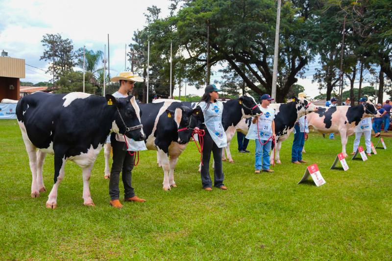
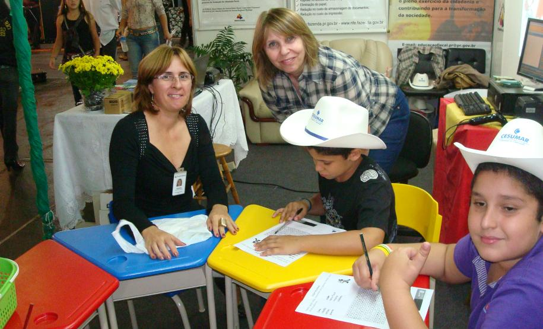
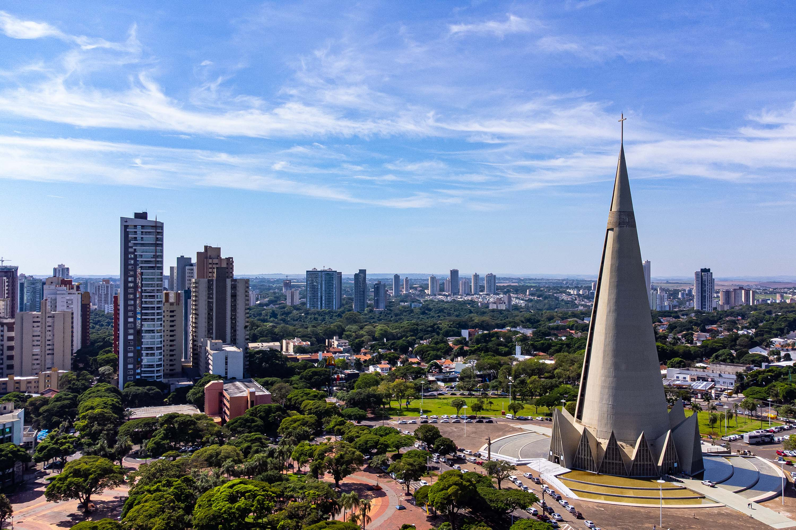
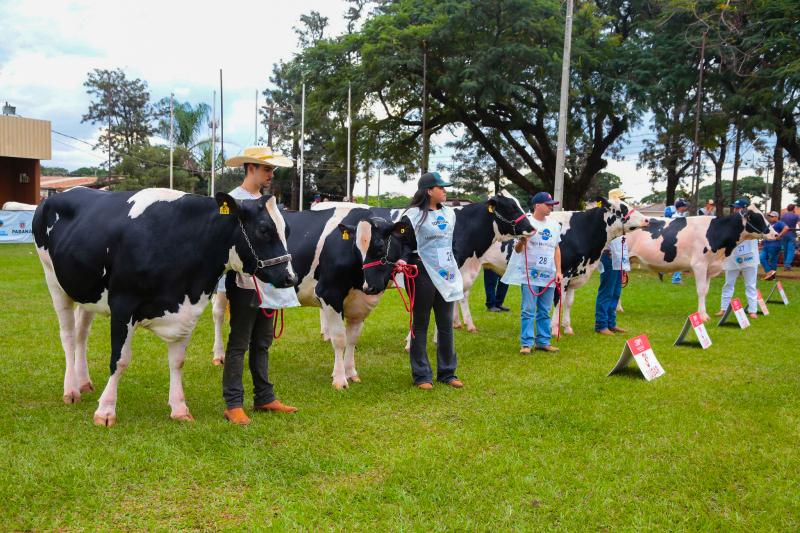
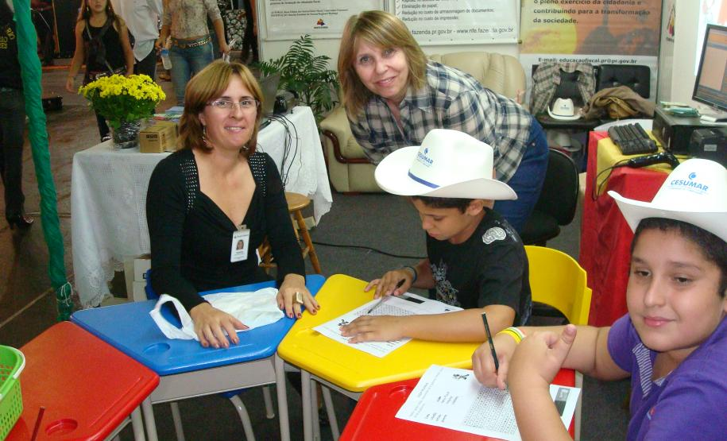
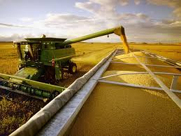
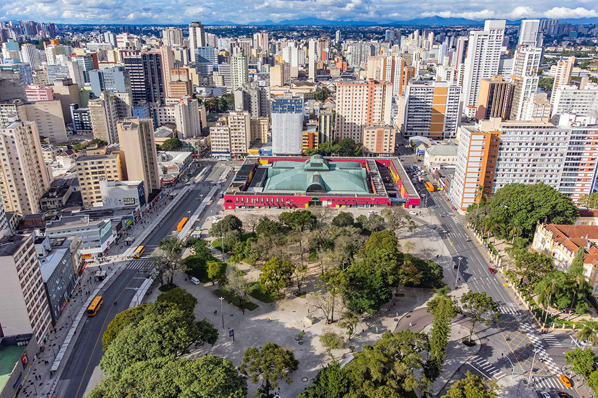
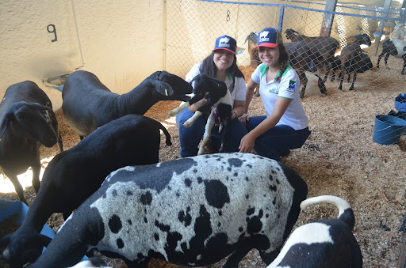
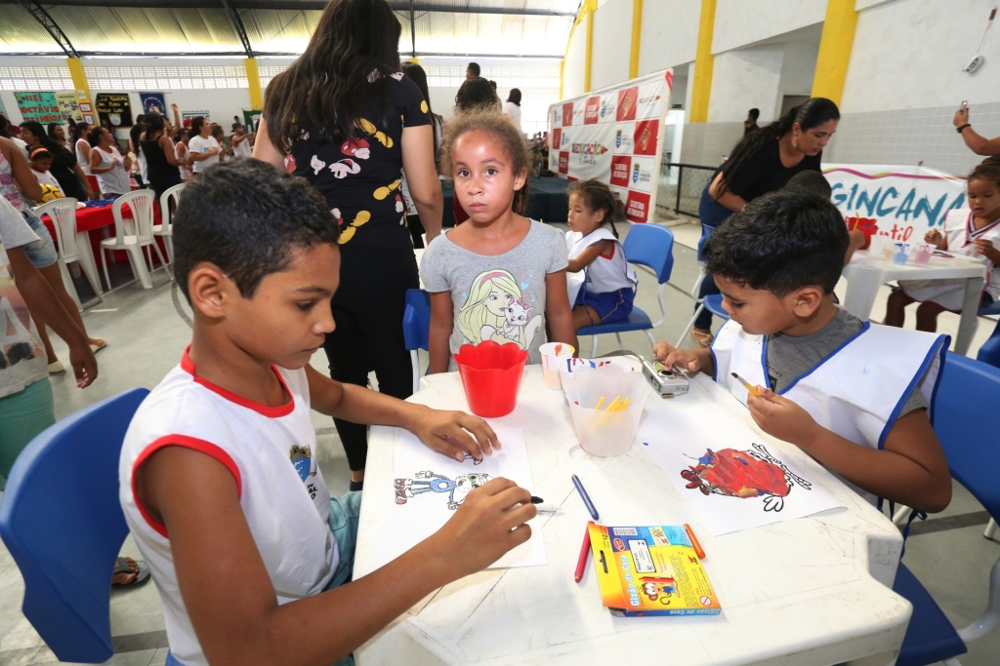
Unindo forças, culturas e conhecimentos entre o rural e o urbano.
De 08 a 18 de maio de 2025 Após celebrar 50 anos de história,2025 inaugura uma nova fase com o tema “O Agro Conecta”, destacando o papel transformador do agronegócio. O agro conecta pessoas, promovendo encontros entre produtores, pesquisadores e empreendedores, impulsionando inovação e negócios. Conecta tecnologia, com máquinas de ponta, inteligência artificial e práticas sustentáveis. Conecta a agricultura familiar ao mercado, valorizando pequenos produtores e fortalecendo sua participação na economia. O agro também conecta sustentabilidade e conhecimento, unindo produção responsável, inovação e preservação ambiental. Aproxima campo e cidade, mostrando sua importância no abastecimento de alimentos e na geração de energia limpa. Conecta passado e futuro, preservando tradições enquanto abraça a modernidade. A EXPOAGRO 2025 será o grande ponto de encontro dessas conexões, evidenciando que o agro vai além da produção: é transformação. De 8 a 18 de maio, no Parque Internacional de Exposições de Curitiba. Novos tempos, novas conexões, infinitas oportunidades.
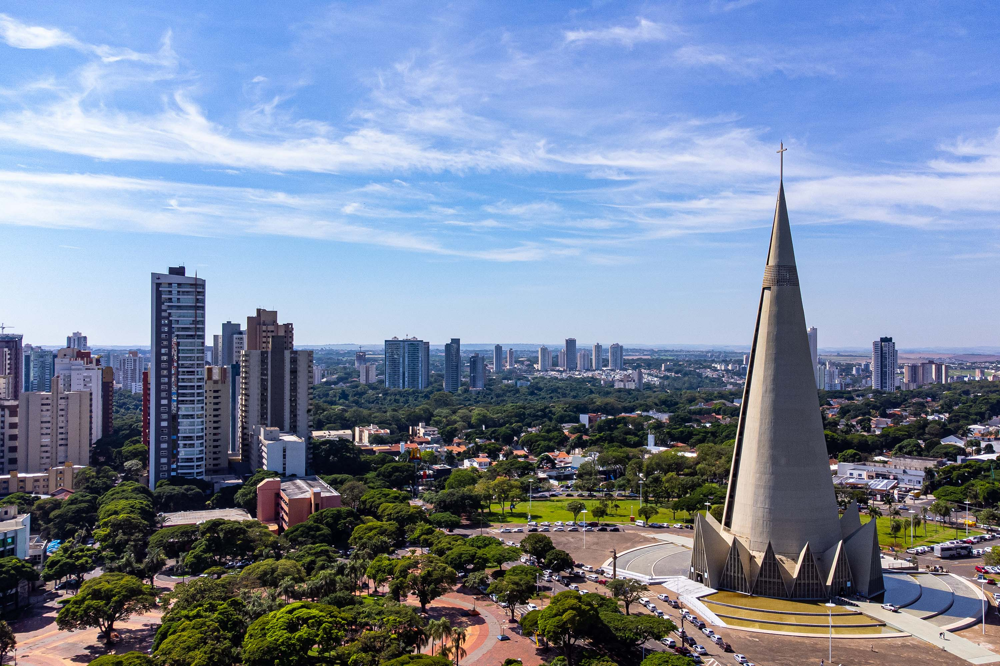
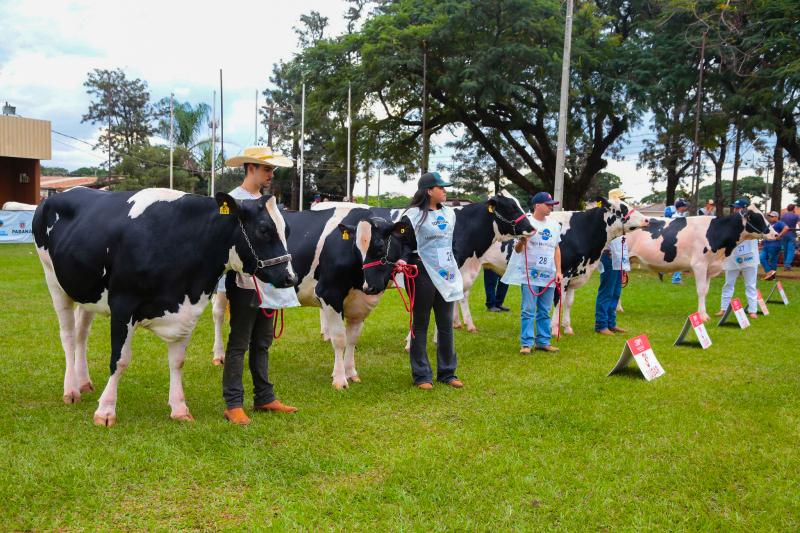
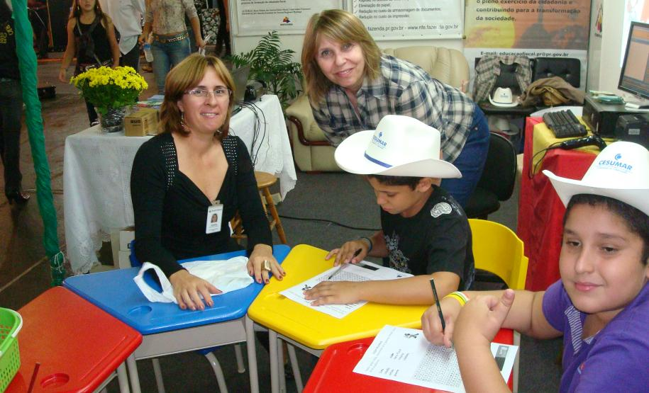
Email: agrinho@projeto.com.br
Instagram: @campocidade_agrinho
Telefone: (00) 1234-5678